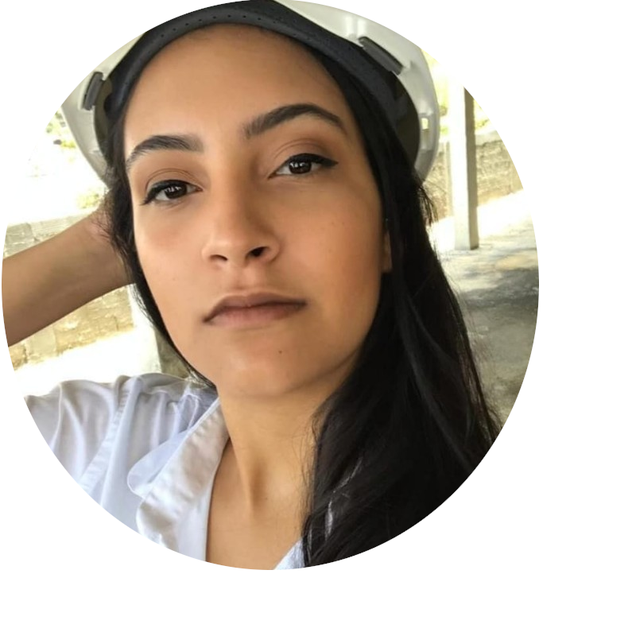

Sobre Mim
Olá! Sou Ana Karolliny Rodrigues, arquiteta e urbanista com especialização em Cenografia. Minha paixão pela representação visual da arquitetura me levou a mergulhar no universo da modelagem digital, utilizando ferramentas como o Revit para criar maquetes eletrônicas detalhadas e realistas.
Neste portfólio, compartilho uma seleção dos meus trabalhos — projetos que unem precisão técnica e expressividade visual, traduzindo conceitos arquitetônicos, cenográficos e urbanísticos em imagens que comunicam com clareza e sensibilidade.
Cada trabalho aqui representa não apenas uma solução técnica, mas também uma proposta visual pensada para transmitir a essência e o impacto de cada ideia. Seja bem-vindo(a) e sinta-se à vontade para explorar!
portfólio de Ana Karolliny